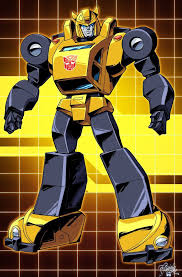

The Transformers are a race of alien, shape-shifting robotic life-forms from the planet
Cybertron. The planet was torn apart by the warring of two factions: the Heroic Autobots,
and the Evil Decepticons. Both factions came to earth to seek the energy to restore their home.
Having awoken in the present day and taking the alternate modes of Earthen vehicles and objects,
the Transformers resumed their conflict... as Robots in Disguise!
Autobot Profiles
The Heroic Autobots stand in the way of the Decepticons' goal of conquest! Fighting for freedom and justice,
these valiant Cybertronians will never waver in the protection of innocent life - human, Cybertronian, or otherwise!
Learn about them here!
Optumus Prime
Optimus Prime is the wisest, strongest, and most noble Autobot of all. He act as the Supreme Commander,
and wholeheartedly believes that freedom is the right of all sentient beings - no exceptions! He
treats the other members of his team as he would his friends, for while he is their leader, he is also
their friend. He is armed with an Ion Blaster and an Energon Axe. Inside his chest, he carries the Matrix
of Leadership, the symbol of his rank. But despite his high status, he had humble origins: he was once a
data clerk named Orion Pax. After he was wounded by Megatron at the start of the Great War, the Autobot
sage, Alpha Trion, rebuilt him with the Matrix inside him, turning him into Optimus Prime. He can split into
3 separate modules: the tractor unit of his semitruck alternate mode becomes Optimus Prime himself, the brain of the trio.
Inside his trailer is Roller, a scout car who can operate up to 1200 miles away. The trailer itself becomes Autobot Headquarters, a combat
deck equipped with computers and an artillery/mechanic robot. The only weakenss of this trio is that if one module is injured,
the other two will share the pain.

Bumblebee
Bumblebee is the smallest of the Autobots, but he's got a big heart. His small size is
easily underestimated by the Decepticons, for while he's not the strongest in terms of physical
strength or firepower, his small size makes him an expert at espionage missions. He desires to be
respected by the other Autobots, and idolizes them, especially Optimus Prime. However, he fails to
realize that the other Autobots look up to him just as much as he looks up to them, and that he already
is respected - after all, Bumblebee does better at espionage than most other Autobots could be. He's also
friendly, and ready to befriend anyone, especially humans, two of them in particular being Sparkplug Witwicky
and his son, Spike.
Cliffjumper
Cliffjumper's motto would pretty much be, "Lemme at them!" He is always the first one into
battle with the Decepticons. He tends to jump the gun, acting first and asking questions later.
His drive to defeat the Decepticons is great, but he tends to act recklessly. He is particularly
suspicious of Mirage, not fully trusting him. Maybe it has something to do with Mirage's personality?
Cliffjumper is one of the fastest Autobots in his car mode, and is armed with Glass Gas, a special, potent
vapor that makes even the toughest of metals as brittle and easily shattered as glass panes. His main weakness
is his recklessness: He often finds himself in blowouts and situations even he can't handle without
help.
Prowl
Prowl is the Autobots' military strategist. His logical processes are more acute than
most other Autobots', and he functions as Optimus Prime's second-in-command. He always
strives to find a logical reason for everything, so it shouldn't be too surprising that he's
hesitent to believe in things like ghosts if there is another explanation possible. He may be
the logical (pun intended) successor to Optimus Prime, but the Dinobot Grimlock is always challanging
for authority. Prowl is armed with an acid-pellet blaster in battle. His main weakness is that he
is often unprepared for the unexpected, which can scramble his circuits.
Mirage
Mirage isn't too happy about being dragged into the war with the Decepticons.
His idea of a good time is spending time with his rich friends on Cybertron, hunting wild
Turbofoxes. But fate had different plans for him. He's proven himself an able warrior with
his rocket-dart hunting rifle and shoulder-mounted missile launcher, but he's even better at
spying on the Decepticons, gathering intel about their next plan. His built in electrodisruptor
can alter his appearance to make him look like someone or something else, or even turn completely
invisible, for a duration of up to 6 minutes. Although he's helped the Autobot cause, he's unsure
of what the Autobot cause is worth. That, combined with littel info about his true nature, makes
others wary or (in Cliffjumper's case) outright suspicious of him. Can he be trusted...?
Ratchet
Forget "You break it, you buy it," this bot's motto is "You break it, I'll remake it."
Back on Cybertron, Ratchet was the best craftsman and mechanic known to the Autobots.
He enjoys partying and giving backtalk, but his medical skills are second to none.
He has arc-welders, laser scalpels, Energon infusers, and more. On Earth, give him the right
parts, and he'll repair any Autobots injured in battle. He's not the strongest in battle, but he's
found himself on the front lines. His main flaw is that, occasionally, his party-loving, dry-witted
nature inhibits his effectiveness in repairing his teammates.
Grimlock
Grimlock is the leader of the Dinobots, a group of five Autobots who transform into mechanical
dinosaurs - in Grimlock's case, a Tyrannosaurus Rex. Grimlock posesses great physical strength
and toughness, but he resents authority figures, especially Optimus Prime, to the point that he led
his team of Dinobots to leave the Autobots on a few occasions. He's not too big in the brains department, but
he's often there when the Autobots need him. In his T-Rex alternate mode, Grimlock can bite steel beams in half,
and has fire breath. In robot mode, Grimlock is armed with an Energon Sword and twin laser blaster. Grimlock
has no real weaknesses other than his stupidity, his lack of speed, and his arrogance.
Sideswipe
Sideswipe is the Autobots' underhanded fighter. He will use any underhanded tactics
necessary to win the battle. He is almost as strong a warrior as his twin brother, Sunstreaker,
but is not as relentless. He enjoys fighting to the finish with his opponent. Sideswipe is armed
with a rocket launcher and photon blaster. He has a jetpack for midair fighting, and can also convert
his hands into piledrivers to clear away rubble. Even when he suffers an injury from his own rash actions,
he will say it's nothing and take it in stride.
Sunstreaker
Sunstreaker is a total egotist. He thinks he's the best thing since sliced Energon, and
loves his sleek racecar mode. He doesn't hide his contempt for the other Autobot cars,
especially his twin brother, Sideswipe. Sunsteaker is a slightly stronger warrior than his
brother, and says so. He is armed with a laser gun, a flare gun that fires signal flares
visible for miles around him, and his best paintjob. Hopefully it doesn't get scratched!
Ironhide
Ironhide is the most battle-tested Autobot, and Optimus Prime's bodyguard and old
friend. He's a old veteran of the Autobots, and he's seen plenty of action. He's not
one to sit around talking when he could let his actions speak for him. Ironhide is one of
the toughest Autobots in the crew, and has reenforced armor plating that proves it - "fragile"
isn't what you'd describe Ironhide as. He is armed with a water gun that shoots anything from
liquid nitrogen to freeze the Decepticons, to adhesive that renders them stuck to the ground, to
molten lead that can burn them! His main weakness is that he's the slowest out of all the Autobots.
Decepticon Profiles
The Decepticons have only one goal: Plundering Earth's natural resoures, convering
them into Energon, and using that Energon to conquer the galaxy! Read about these cold-sparked
villains here!
Megatron
Megatron is the tyrannical leader of the Decepticons. He was once a gladiator who rose to fame
through his fiery speeches of equality. In time, he founded the Decepticons and rebelled against the leaders
of Cybertron, plunging the planet into civil war. Megatron is a ruthless, cunning strategist who plans to
use Earth's resources to conquer Cybertron once he destorys teh Autobots. He is armed with a destructive Fusion Cannon,
an Energon Mace, and a particle beam cannon. His Fusion Cannon powers his cannon in tank mode.
He has the abilty to link up with a black hole, draw antimatter from it, and use it as a weapon.
His weaknesses are as of yet unknown.
Starscream
Starscream is the Decepticons Aerospace Commander, as well as Megatron's second-in-command.
He craves power and constantly tries to overthrow Megatron and become leader of the Decepticons.
He believes that the Decepticons shouldn't rely on raw strength so much as speed and guile to complete
their mission. He is so treacherous that any time Megatron falls in battle, he quickly declares himself
Deception Leader. He is the fastest flyer of the group, capable of reaching a speed of Mach 3 and suborbital
levels of altitude. He's armed with cluster bombs and Null-Rays that short out a target's electrical
flow. Although he's good at his job, Starscream has a tendancy to overestimate himself and his abilites,
which may very well lead to his downfall...
Some Seekers
The Seekers make up the bulk of the Decepticon army. They are lookalikes of the Decepticon
Starscream in varying color, and are useed as cannon fodder. They are loyal to the Decepticon
cause and to Megatron, and are under his and Starscream's command. They all have the standard
equipment of twin Null-Rays, and can reach speeds of up to 1,500 miles per hour in the air.
They are expendable in Megatron's eyes, as there are countless Seekers. Some famous Seekers include
the blue-colored Thundercracker, the black-and-purple Skywarp, the Coneheads Ramjet, Dirge, and
Thrust, the Rainmakers Acid Storm, Ion Storm, and Nova Storm, the Welcoming Committee of
Sunstorm, Bitstream, and Hotlink and more!
Soundwave
It is rumored among the Decepticons that their communications officer, Soundwave, has the
ability to hear a fly sneeze. He is loyal to the Decepticons and especially to Megatron,
but is an opportunist at heart. He enjoys blackmailing his comrades, especially by reporting
their failures to Megatron. He posesses limited telepathic powers, and has the ability to read
minds, which comes in useful for learning what the Autobots are planning, and for learning dirty
secrets his comrades have for use in blackmail. In tape deck mode, he He is armed with a concussion
blaster and sonic cannon that fires powerful bursts of sound to disable his enemies, and has a legion
of minions that do his dirty work at Megatron's leave.
Laserbeak
Laserbeak is one of Soundwave's many minions, who transforms into a Microcassette. He funcions
as the an interrogator, spy, and even front-line figher, striking at ususpecting targets. He is known
most famously for his cowardice, however. Should an enemy start resisting him, he'll run for the hills.
He prefers the "hide-and-seek" method of spying, making sure he's unseen. He is armed with a pair of ruby-powered
laser cannnons, and can fly at a top speed of 250 miles per hour. If his reserves of fuel run low, he'll flee
rather than fight.
Ravage
Ravage is one of Soundwave's Microcassette minions, and the silent, aloof type. He
is respected by the other Decepticons, and is the night warrior. He will stalk in the shadows
until it is time to pounce. He funcions as the sabotuer of the Decepticons. He has a soundless
walk, and is cloaked by an electromagnetic shield that prevents his detection. He is armed with
twin proton bombs with a yield of one megaton. His weakness is that his eyes are light-sensetive,
so bright light can blind him temporarily.
Ratbat
Ratbat is one of Soundwave's Microcassette minions. He is the Decepticons' fuel scout, and is known
to gather fuel by siphoning off the gas tanks of cars. He also loves indulging himself by drinking some of the fuel,
especially of well-made, expensive cars - the costlier the car, the better the fuel tastes. His 1-foot wingspan
can expand to a span of 10 feet. He is armed with twin free-electron lasers.
Rumble
Rumble is one of Soundwave's Microcassette minions, and the twin brother of Frenzy. He is small,
but like a street punk, he's a tough trash-talker. Many find him difficult to get close to, because
of his power: Rumble can transform his arms into piledrivers that cause earthquakes that cause cracks
in the ground. Alternatively, he can transmit low-frequency waves from his feet for the same effect without
the dramatics. If that doesn't cut it, Rumble is armed with twin laser cannons. His small size makes him
phyically weak, but he's difficult to approach once he breaks out the piledrivers. Also, he sometimes
gets confused with Frenzy.
Frenzy
Frenzy is one of Soundwave's minions, and the twin brother of Rumble. If he had a resporatory
system, then his oxygen would be war. To him, there's no cause the Decepticons are fighting
for. Frenzy only fights for the sake of fighting, destroying for destruction's sake. His efforts
are greatly appreciated by the Decepticons. Frenzy is armed with twin laser cannons, and has the
ability to create piledrivers, similarly to Rumble. He can generate a high-pitched grating noise
of around 200 decebels that causes malfuncions in nearby machinery. Frenzy's manic attack is able
to be countered by calm, levelheaded logic. He is sometimes confused with his twin, Rumble.
The Witwickys
Sparkplug and his son, Spike, are the Autobots' human allies and friends. They were working
on an oil rig when the Decepticons attacked, intent on taking the oil for themselves. The
Autobots arrived in time to save the rig, and the Witwickys thanked them, becoming their friends
and allies. Sparkplug sometimes helps build things for the Autobots, and even helps Ratchet repair
them. Spike is close friends with Bumblebee, and shows the Autobots various things of Earth culture.
At one point, Sparkplug built an Autobot out of spare parts: The Frankenstein's monster-like Autobot X.
When Spike was injured, his mind was transferred to Autobot X's body. However, Spike went out of control,
even joining the Decepticons briefly, but he showed his true colors by turning Megatron's firepower on
his own troops! Thankfully, Spike's original body was healed, and his mind was returned to the human
Spike would later go on to get married to a girl named Carly, and they had a son, Daniel.
Dr. Arkeville
Dr. Arkeville was a cyborg human scientist who allied himself with the Decepicons.
He has many inventions which could, and even were, used for evil purposes. One of his most
famous inventions was the Hypno-Chips. The Hypno-Chips were used to turn various humans into slaves
for the Decepticons. The Decepticons' plan at the time was to destroy Earth by bringing Cybertron
into its orbit! The humans were used for labor, and even were commanded to attack the Autobots!
One such human was Sparkplug Witwicky. In the end, the Hypno-Chips were disabled by the Autobots,
and the humans were freed. The Decepticons, thankfully, were defeated.
A Quintesson
The Quintessons are an alien race who, long ago, discovered Cybertron and enslaved its
native populace. However, the Transformers ended up fighting back, driving their former
masters off the planet for good. The Quintessons then settled on the planet Quintessa. There
are many different types of Quintessons: The most prominent are the Judges, one of which is depicted
in the image. They have five faces on inverted egg-shaped bodies. Others include the Scientists, Prosecuters,
Allicons, and the ravenous Sharkticons. The Quintessons have a corrupt judicial system. If you're guilty, you're
fed to the Sharkticons! If you're innocent... you're still fed to the Sharkticons. Better hope you can escape
their trial before it concludes.
Unicron
Unicron is the absolute Lord of Chaos and Entropy. A god of the darkest design, his goal is to
destroy the universe. He isn't called the "Planet Eater" for nothing; given the chance, he'll eat
Cybertron for breakfast - literally! His alternate mode is a giant planet with a ring and horns where
the "mouth" is. His robot mode is colossal, dwarfing Mercury easily. Although he was once a multiversal
singularity (i.e. across all Transformers universes and continuities, there is only ONE Unicron), that is
no longer the case. Because of this, each continuity now has its own version of Unicron. One Unicron that
is exponentially different is the Unicron from the mirror universe of Shattered Glass, where Unicron's benevolent
side is. This Unicron is the God of Extropy, and reformatted Shattered Glass's evil, insane Optimus Prime,
curing him of his madness and turing him into Nova Prime. Other Autobots were reformatted similarly, becoming Unicron's
Warriors of Justice.
Primus
Primus is the opposite number to Unicron: whereas Unicron is the Chaos Bringer, Primus
is the God of Light, and the creator of the Transformers. His size is enormous; he is big
enough to fight Unicron in robot mode. Like Unicron, Primus transforms into a planet; however,
the specific planet will surprise you: Primus's alt mode is Cybertron itself! In robot mode,
Primus has lots of weaponry, and can even use the two moons of Cybertron as weapons! Like Unicron,
Primus was once a multiversal singularity; however, that is no longer the case. Now, each universe
has its own Primus. One of those Primuses is significantly different: the Primus of Shattered Glass,
where he is known as the dreaded Order Bringer. He was bent on bringing order to the universe at any cost,
even if it meant destruction of life and killing freedom.